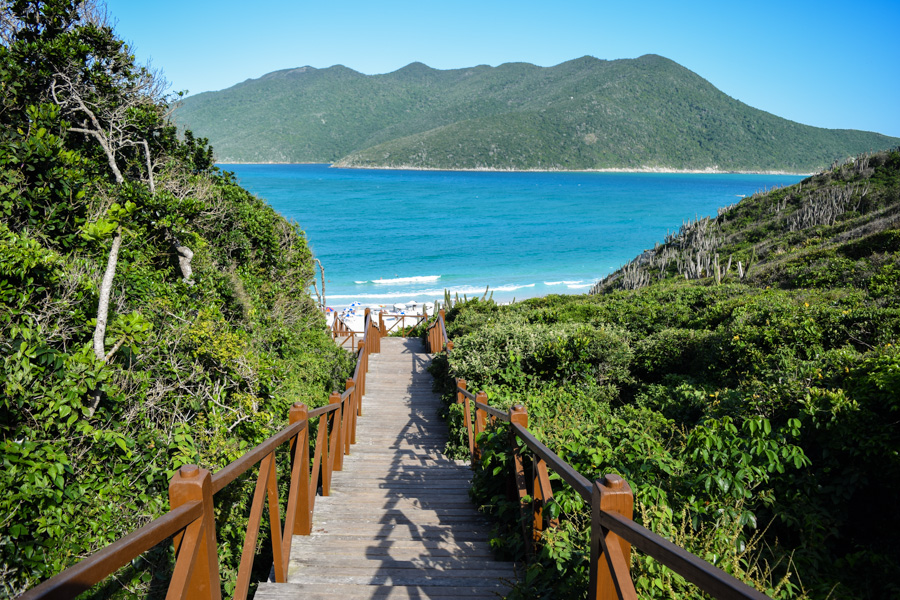
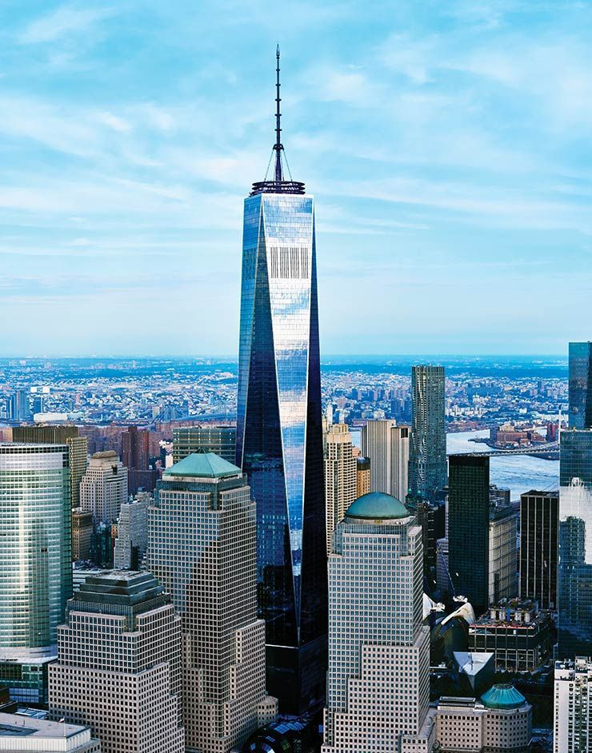
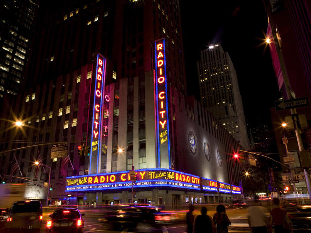
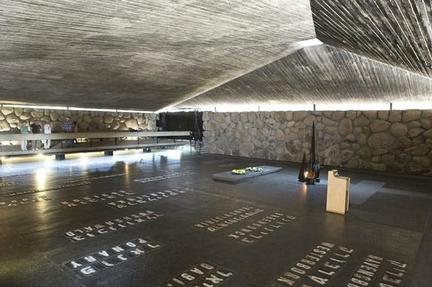

Sejam bem-vindos aos meus mapas. Apresento-vos um lugar que gostei de conhecer e também outras duas sugestões de amigos.
Reginaldo Gaio - Fevereiro de 2018

A escadaria que dá acesso às Prainhas do Pontal do Atalaia parece levar ao paraíso. Do alto do morro, o que se vê é um cenário paradisíaco. Difícil não ficar hipnotizado pela vista no topo da escada, de onde se vê a areia branca, o mar colorido e o verde ainda preservado na vizinha Ilha do Farol. A descida é íngreme e são muitos degraus. Nada que uma paradinha para as fotos não ajude.
Renato Machado - Setembro de 2018

Os elevadores SkyPod sobem 102 andares em 47 segundos. Este passeio surpreendente revela a transformação da cidade de Nova York de terras instáveis para a notável floresta de arranha-céus de hoje. One World Trade Center também é conhecido como a Freedom Tower.
Caio Barra - Novembro de 2018

O Radio City Music Hall é uma casa de espectáculos localizada no Rockefeller Center de Nova York. Conhecido como o Local de Espectáculos da Nação, o Radio City Music Hall abriu ao público no dia 27 de dezembro de 1932.
Thales Ferreira - Julho de 2018

Localizado no sopé do Monte Herzl, no Monte da Recordação (Har HaZikaron), em Jerusalém, Yad Vashem é um complexo de cerca de 18 hectares que contém o moderno Museu da História do Holocausto, vários memoriais, como o Memorial das Crianças e a Sala da Memória, o Museu de Arte do Holocausto, esculturas, lugares comemorativos ao ar livre, como o Vale das Comunidades, a sinagoga, arquivos, um instituto de pesquisa, biblioteca, uma editora e um centro educacional, a International School for Holocaust Studies (Escola Internacional para o Estudo do Holocausto).